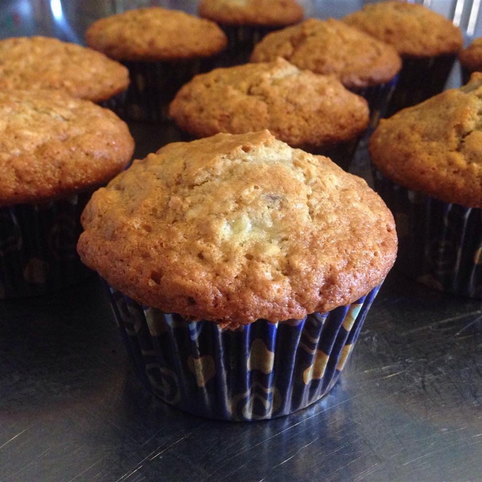

Banana Oat Muffins

Muffins are the perfect easy and delicious breakfast. Just make them the night before and grab and go in the morning. Oats and Bananas make the perfect flabor combination! Makes a dozen.
Ingredients
- 1 1/2 cups unbleached all-purpose flour
- 1 cup rolled oats
- 1/2 cup white sugar
- 2 teaspoons baking powder
- 1 teaspoon baking soda
- 1/2 teaspoon salt
- 1 egg
- 3/4 cup milk
- 1/3 cup vegatble oil
- 1/2 teaspoon vanilla extract
- 1 cup mashed bananas
Directions
- Preheat the oven to 400 degrees F (205 degrees C). Line a 12-cup muffin tin with paper liners.
- Combine flour, oats, sugar, baking powder, soda, and salt in a medium bowl; set aside.
- Beat egg lightly in a large bowl. Whisk in milk, oil, and vanilla. Stir in mashed bananas. Add the flour mixture and stir until just combined. Spoon batter into the prepared muffin cups, filling each 3/4 full.
- Bake in the preheated oven until tops spring back when lightly pressed, 18 to 20 minutes.